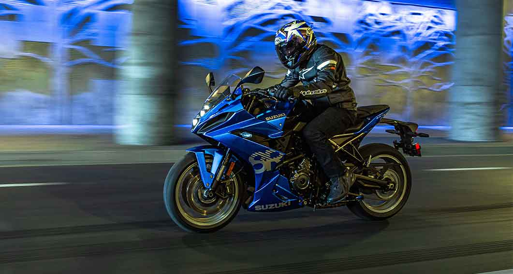

Historie Suzuki
Suzuki Motor Corporation byla původně founded Michio Suzukim v roce 1909 jako výrobce tkalcovských stavů. V roce 1952 firma představila svůj první motocykl — Power Free, jednoduchý moped s 36cc motorem. Přechod na motocykly byl logickým krokem v poválečném Japonsku, kde byla poptávka po levné dopravě obrovská.
V 60. letech Suzuki vstoupilo do závodního sportu a začalo slavit úspěchy v třídě 50cc a 125cc. Legendární závodník Ernst Degner přinesl do Suzuki technologie z východoněmecké firmy MZ, což výrazně urychlilo vývoj závodních motorů. V roce 1962 získalo Suzuki první titul mistra světa.
Přelomovým momentem byl model GT750 z roku 1971 — dvoutaktní tříválec přezdívaný „Water Buffalo" (Vodní buvol). Tento model byl průkopníkem vodního chlazení v motocyklech. Ještě větší revolucí byl model GS750 z roku 1976 — jeden z prvních moderních čtyřtaktních čtyřválců, který konkuroval japonské konkurenci.
Největší legendou Suzuki je model GSX-R750, představený v roce 1985. Tento stroj definoval celou kategorii supersportů a jeho DNA je cítit v každém moderním sportovním motocyklu. GSX-R série se stala nejúspěšnější závodní platformou v historii motocyklového sportu. Suzuki také drží rekord nejrychlejšího sériového motocyklu světa — Hayabusa překonala 300 km/h.
Novinky 2025
Suzuki se v roce 2024 stáhlo z MotoGP, ale pokračuje ve vývoji silničních modelů. Nová Hayabusa dostala pro rok 2025 aktualizovanou elektroniku s novým IMU senzorem a vylepšenou trakční kontrolou. Legenda tak zůstává relevantní i v moderní době.
GSX-8S a GSX-8R jsou novinky v middle-weight segmentu s novým 776cc dvouválcovým motorem. Tyto modely jsou určeny pro jezdce hledající výkonný ale zvládnutelný motocykl pro každodenní použití i víkendové výlety.